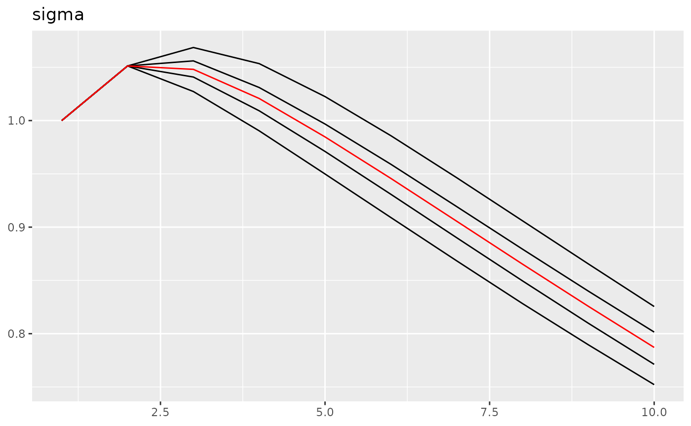

This is a demonstration of using ngme2 package to fit a
space-time bivariate model. Before use this model, please make sure you
are familiar with the space-time (tensor product) model and bivariate
model separately (Please see Ngme2
space-time model and Ngme2 bivariate
model for more details).
This model is a combination of the previous two, we use the bivariate model as the second part of the tensor product model.
## This is ngme2 of version 0.6.0
## - See our homepage: https://davidbolin.github.io/ngme2 for more details.First we specify the two indices for the space-time model. We have 20 time points and 40 mesh locations for space.
time_len = 20
half_bv_len = 50
# specify indices for 2 parts
time_idx = rep(1:time_len, each=half_bv_len*2)
bv_idx = rep(c(1:half_bv_len,1:half_bv_len), time_len)
# group to indicate two different fields for bivariate model
group = rep(rep(c("f1", "f2"), each=half_bv_len),time_len)Next, we specify the bivariate model using a list, here we consider a bivariate model with two AR(1) processes.
bv_list <- list(
model="bv",
sub_models = list(
f1 = list(
model="ar1",
rho=0.5
),
f2 = list(
model="ar1",
rho=-0.3
)
)
)Then we specify the full model using the f function,
which is a tensor product model with the first part being an AR(1)
process and the second part being the bivariate model.
Now we turn to estimate the model using simulated data.
bv_list_2 <- list(
model="bv",
sub_models = list(
f1 = list(
model="ar1"
),
f2 = list(
model="ar1"
)
)
)
nn = length(Y)
fit0 = ngme(
Y ~ 0 + f(1:nn, model="rw1") +
f(map=list(
time_idx, bv_idx
),
model="tp",
first = list(model="ar1"),
second = bv_list_2,
noise=noise_nig()
),
control_opt = control_opt(
iterations = 10
),
data=data.frame(Y=Y),
group = group
)## Starting estimation...
##
## Starting posterior sampling...
## Posterior sampling done!
## Note:
## 1. Use ngme_post_samples(..) to access the posterior samples.
## 2. Use ngme_result(..) to access different latent models.
fit0## *** Ngme object ***
##
## Fixed effects:
## None
##
## Models:
## $field1
## Model type: Random walk (order 1)
## No parameter.
## Noise type: NORMAL
## Noise parameters:
## sigma = 0.866
##
## $field2
## Model type: Tensor product
## first: AR(1)
## rho = 0.238
## second: Bivariate model (non-Gaussian noise)
## theta = -0.0299
## rho = -0.0466
## f1: AR(1)
## rho = 0.242
## f2: AR(1)
## rho = -0.23
## Noise type: NIG
## Noise parameters:
## mu = -0.473
## sigma = 1.51
## nu = 0.682
##
## Measurement noise:
## Noise type: NORMAL
## Noise parameters:
## sigma = 1.27
##
##
## Number of replicates is 1
traceplot(fit0, "field1")
Here we can see, we get the simulated parameter correctly.